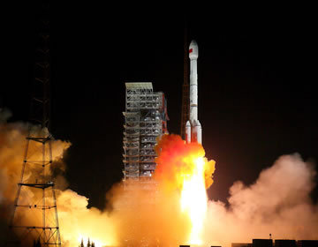
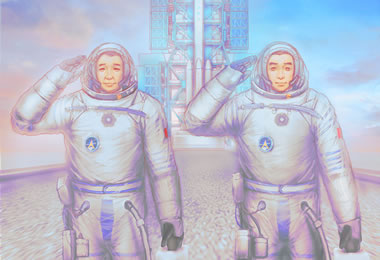
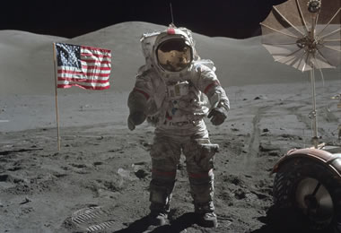
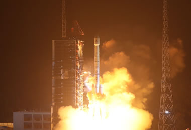

航天知识:火箭和宇航员
中国火箭只往两个方向飞，不是东就是南
信息来源: 爱航天网
常武权说，地球的自转方向是自西向东，火箭如果向东飞行，相当于"顺风"而行，可以借助地球自转带来的速度增量，省力、省燃料。如果 "乘客"的目的地是太阳同步轨道，火箭只能往南或往北飞，常武权说，这是由太阳同步轨道倾角决定的。比如长征二号丙火箭发射对地观测卫星时，目标轨道的倾角约为97°太阳同步轨道，它发射的方向约为191°（即南方）。
航天员太空睡觉也失眠？
信息来源: 爱航天网
当飞船处于地球和太阳之间时，阳光照亮了飞船外的太空，这就是白天，当飞船转到地球的后面，阳光照不到它时，这就是黑夜。飞船绕地球运转一周的时间是90分钟，相当于在24小时中。航天员在飞船里要度过16个白天和夜晚，能看到16 次日出，这种昼夜规律的改变，对航天员的睡眠影响极大。航天员长期生活在地球上，习惯了以24小时为周期的生物钟。这个生物钟控制着体内促进睡眠的激素（褪黑激素）控制着大多数生理参数周期。
航天员在太空连感冒都抵御不了？
信息来源: 爱航天网
李莹辉介绍，淋巴结、骨髓等免疫器官，免疫细胞以及其分泌的免疫因子，构成了人体免疫的几大屏障。同时，免疫系统又分为非特异性免疫系统和特异性免疫系统。前者与生俱来，是人类在漫长进化过程中获得的一种遗传特性；后者则是经过感染或人工预防接种，使机体获得抵抗感染的能力。航天员在太空，处于微重力环境和辐射环境下。同时他们置身于狭小空间，长期与外界隔离。李莹辉说，前两者属于自然环境，后者属于社会环境，都会影响航天员的免疫力。
火箭转场时，为什么有的"躺"着，有的"站"着？
信息来源: 爱航天网
火箭转场时，有时采用"躺"姿，火箭各部段安静地"躺"在转运车上；有时它还会采用"站"姿，也就是站在活动发射平台上，慢慢"走"向发射塔架。那么，火箭转场时，到底有几种姿势呢？选择姿势又有哪些讲究呢？听听中国运载火箭技术研究院所属北京宇航系统工程研究所火箭地面总体设计师肖士利怎么说。